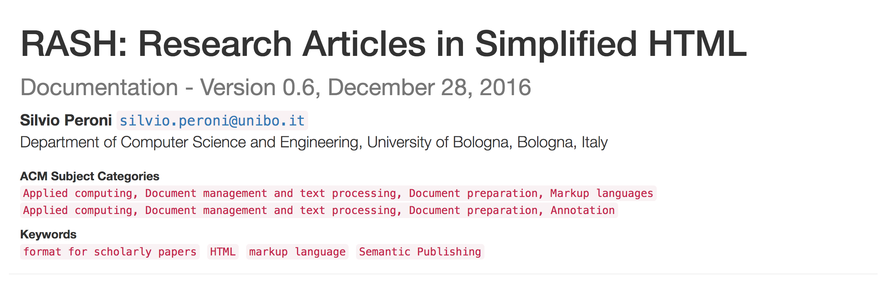
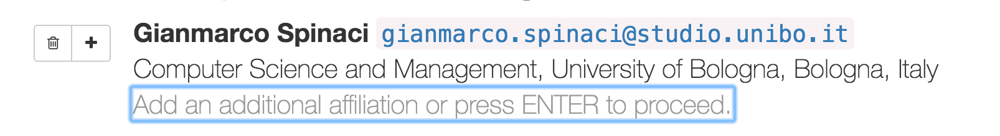
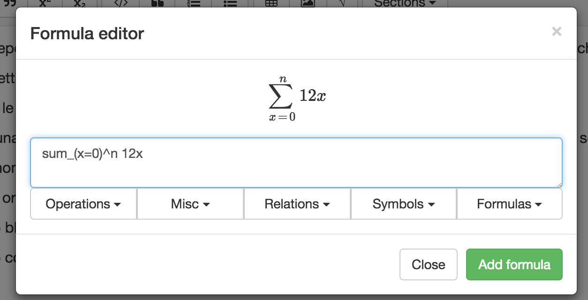
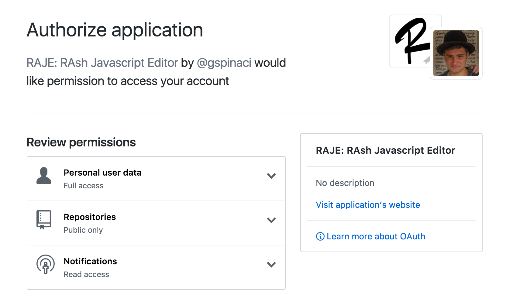
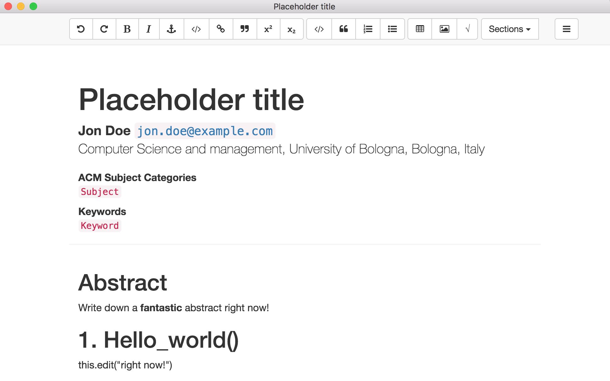
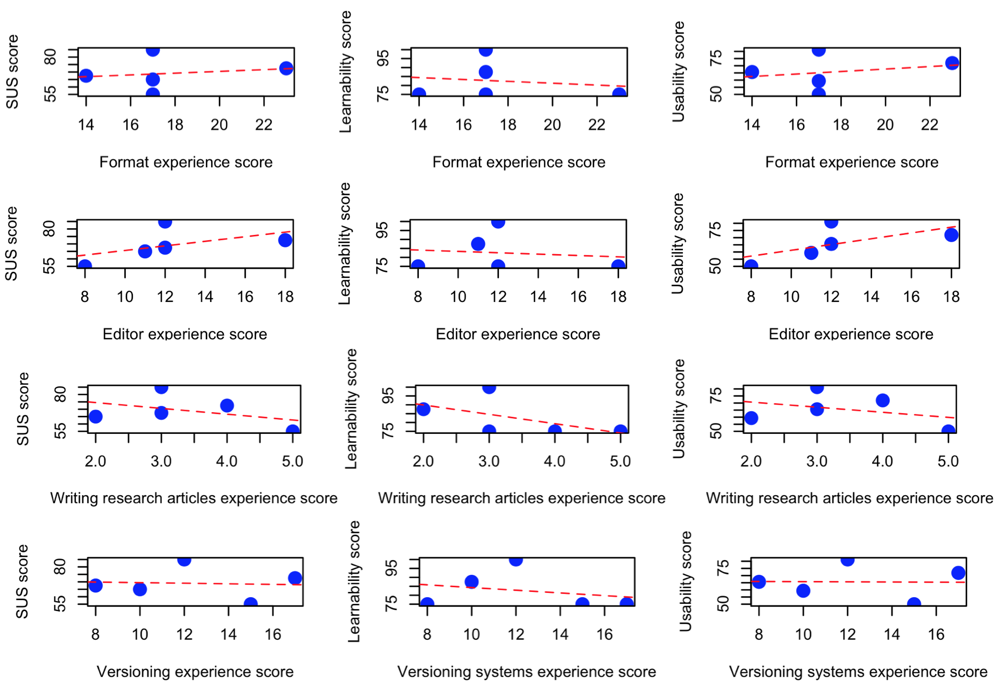

The most used format for submitting and publishing papers in the academic domain is the Portable Document Format (PDF), since its possibility of being rendered in the same way independently from the device used for visualising it. However, the PDF format has some important issues as well, among which the lack of interactivity and the low degree of accessibility. In order to address these issues, recently some journals, conferences, and workshops have started to accept also HTML as Web-first submission/publication format. However, most of the people are not able to produce a well-formed HTML5 article from scratch, and they would, thus, need an appropriate interface, e.g. a word processor, for creating such HTML-compliant scholarly article.
To provide a solution to the aforementioned issue, in this paper we introduce the RASH JavaScript Editor (a.k.a. RAJE), which is a multi platform word processor for writing scholarly article in HTML natively. RAJE allows authors to write research papers by means of a user-friendly interface hiding the complexities of HTML5. We also discuss the outcome of a user study where we asked some researchers to write a scientific paper using RAJE.
RASH version: https://w3id.org/people/essepuntato/papers/raje-doceng2017.html
Currently, the most used format for submitting and publishing scholarly articles is the Portable Document Format (PDF) . One of the main strengths of this format is its hard formatting style that ensures to be read and visualised by any device in the same way. However, PDF has also important drawbacks, such as the lack of interactivity, the fact that its monolithic structure is not appropriate for sharing its content on the Web as a common web page, and its known difficulties regarding the accessibility of its content by people with disabilities . Usually, in order to submit an article to a particular venue such as a journal or a conference, authors need to create a document that will be exported as PDF. This document is usually written with word processors (e.g. Microsoft Word and OpenOffice) or by means of appropriate markup languages such as LaTeX. While in the first case the rendering of the document (and, thus, of the final PDF to export) is what the word processor shows in the screen, LaTeX obliges its users to compile the document in order to understand how it will be rendered in PDF.
In the last years, the use of PDF as submission/publication format has been criticised by several people and movements (e.g. Linked Research), and several discussions have raised the issue of using another (Web-first, accessible, and open) format for preparing and sharing scholarly works, i.e. HTML . Following this idea, several conferences and journals have started to experiment the use of HTML as submission format. For instance the 15th and the 16th International Semantic Web Conference, the 13th and the 14th Extended Semantic Web Conference, the 20th International Conference on Knowledge Management and Knowledge Engineering, the Poster and Demo session at 13th International Conference on Semantic Systems, and journals like Data Science published by IOS Press, are among those that have started to adopt HTML.
One of the most used and appreciated formats for creating HTML-based scholarly papers is the Research Articles in Simplified HTML (RASH) . RASH is a markup language that restricts the use of HTML elements to only 32 elements and enables one to include also RDF statements . In addition, it uses the new Digital Publishing WAI-ARIA Module 1.0 for specifying accessible structural semantics to the various document parts. While the framework that has been developed for RASH includes a lot of conversion tools from word processor formats (e.g. the Open Document Format used by Open Office and the Open XML format used by Microsoft Word), no native editor for facilitating the creation of Web-first RASH article has been proposed yet.
In this paper, we introduce the RASH JavaScript Editor (RAJE), a What You See Is What You Get (WYSIWYG) word processor for writing scholarly articles in HTML, according to the RASH format. In particular, RAJE allows authors to write research papers in HTML natively by means of a user-friendly interface, instead of writing raw markup with an IDE, a text editor or any external word processor. RAJE guarantees to its users the benefits of a word processor combined with the ones given by an HTML-based format, i.e. interactiveness, accessibility and easiness to be processed by machines. In addition, RAJE uses the GitHub API so as to allow authors to store their articles online, to keep track of changes by means of the GitHub services, and to share the articles with others. This paper has been written by using RAJE itself, and it was converted into the appropriate layout requested by the conference by means of the RASH Online Conversion Service (ROCS) .
The rest of the paper is organised as follows. In we describe some of the most important HTML-based editors, while in we give some background about RASH and the existing tools in the RASH framework. In we introduce RAJE, and we provide a high-level description and show some details about its implementation. In we present the outcomes of a user testing session we have run by involving people in the Academia so as to understand the level of perceived usability of RAJE when used for writing a scholarly article. Finally, in we conclude the paper sketching out some future developments.
In the past several works have been developed for easing the creation of HTML-based scholarly papers. In this section, we introduce some of the most relevant ones, by discussing their main characteristics.
Authorea is an online platform to write and edit scientific papers. Every article is an HTML document and Git repository simultaneously. The main goal for the development of Authorea was to fix collaborative problems that could come out during the creation of technical, scholarly and scientific writings, so as to allow authors to take advantages of using Git versioning system and keeping track of every single displayed change. In addition, every article is accessible from anywhere, by using any device connected to the Internet, and no TeX installation is required for producing the final PDF layout necessary for the submission. In addition, Authorea allows one to write mathematical notations, tables, plots and figures in each LaTeX and MathML.
Dokieli is a client-side editor for decentralised article publishing, annotations, and social interactions. Since Dokieli follows a pure decentralisation principle, authors can publish the paper where they prefer. In particular, Dokieli complies with the Solid protocol, based on the Linked Data Platform W3C standard , so as to allows one to edit the HTML-based scholarly article in the browser and to save it directly to server storage.
Fidus Writer is an open source WYSIWYG collaborative HTML-based word processor made for academics who need to use citations and formulas within papers. All the articles created with it can be exported in more ways: as a website, a paper, or an ebook. Independently from the particular export, the editor allows authors to focus on the content of the paper, while the final layout can be choosen once the content is finalised. FidusWriter supports LaTeX for adding footnotes and citations directly inside the documents and allows a real-time collaboration with other users.
TinyMCE is a WYSIWYG HTML-based editor that can be instantiated within an existing HTML page. It is a huge project that involves more than 150 contributors with almost 6500 commits on Github. Its include facilities for formatting, table insertion, image editing, customizable themes, and it is accessible for users with disabilities – in fact, it follows WAI-ARIA guidelines so as to make HTML documents compatible with screen readers such as JAWS and NVDA. It is already integrated with frameworks such as JQuery and Angular.js, or inside common content management systems such as Wordpress or Joomla.
In order to understand some design choices of RAJE, as well as some elements of the interface, we need to provide some background about RASH, the language on top of which the editor has been built.
The RASH format is a markup language that restricts the use of HTML elements to only 32 elements for writing academic
research articles. It allows authors to add RDF statements to the document by means of the
element script with the attribute type set to application/rdf+xml
, text/turtle
or to application/ld+json
.
In addition, RASH strictly follows the Digital Publishing WAI-ARIA Module 1.0 for expressing
structural semantics on various markup elements used.
A RASH document begins as a simple (X)HTML5 document, by specifying the generic HTML DOCTYPE followed by the document
element html with the usual namespace http://www.w3.org/1999/xhtml
specified. The element html contains
the element head for defining metadata of the document according to the DCTERMS and PRISM standards,
and the element body for including the whole content of the document. On the one hand, the element head of
a RASH document must/should include some information about the paper, i.e., the paper title (element title),
at least one author and other related information (i.e., affiliations, keywords, categories, by using the elements meta and link).
On the other hand, the element body mainly contains textual elements (e.g., paragraphs, emphases, links,
and quotations) for describing the content of the paper, and other structural elements (e.g., abstract, sections,
references, and footnotes) used to organised the paper in appropriate blocks and to present specific complex structures
(e.g., figures, formulas, and tables).
Note that RASH is one of the proposals for using HTML-based language in scientific articles. Several others exist and are valid. The discussion about RASH and its competitors is out of the scope of this work. More details can be found in , in which we also discussed how the internal structure of RASH takes benefits for implementing services and functionalities for the final users.
In particular, it is worth stressing here on the usage of patterns within RASH, that heavily impacted on the design and behavior or RAJE. The systematic use of these structural patterns is an added value in all stages of the documents' life-cycle: they can be guidelines for creating well-engineered documents and vocabularies, as well as helpers to manipulate structural components in documents.
RASH is accompanied by its Framework, which is a set of specifications and writing/conversion/extraction tools for writing articles in RASH. In particular the RASH Framework includes tools for checking the validity of RASH documents, visualising RASH documents on browsers with different layouts, for converting RASH documents into LaTeX and ODT/DOCX files into RASH, and for automatically annotate RASH elements with their actual (structural) semantics according to the Document Components Ontology (DoCO) .
This section presents the main features of RAJE and some details about its implementation. It is split into three parts: we first present the basic functionalties, then we go deeper in the support for collaborative editing available in RAJE and finally, we provide some implementation details.
RAJE is a stand-alone multi-platform software used to generate RASH documents. Its sources and the related binary files are available on GitHub a licensed according to the ISC License, as all the other tools included in the RASH Framework. Before starting the development of the tools we have decided a series of desiderata and needs that such an editor should properly address, as introduced in the following list:
being totally compatible with RASH and HTML5;
relying on the existing tools developed for visualising RASH documents, included in the RASH Framework;
simplifying the writing of the document keeping things as natural as possible;
not enabling the user to personalise the actual rendering of the document according to specific layouts – the focus must be on the content only;
following the best practices already used in existing word processors such as Microsoft Word and Open Office for creating structures typical of scholarly articles (lists, tables, figures, references, etc.);
allowing the creation of mathematical formulas by means of an appropriate interface, hiding the complexities of the language used for storing such formulas with Web-first formats, e.g. MathML;
interacting with GitHub for easing the storing, sharing, and preservation of the articles.
In the following subsections, we provide a brief discussion about how the typical structures of a scholarly article can be created by means of RAJE.
The metadata of a RASH document are stored inside the head element by using meta or
link elements. These metadata are rendered by the browser as shown in and
include the title (mandatory), the author list (mandatory), the ACM subject categories (optional), and the keywords
(optional). RAJE permits to act on any of these metadata.

Every element in this metadata section can be easily edited by clicking on it – and the cursor will be placed where
requested. The title is usually accompanied with a subtitle. To insert the subtitle, one can simply press enter
at the end of the title. Once added, the subtitle can be filled up with text, and the author can proceed to the
next editable element pressing enter again.
Any author listed has its own button set for adding a new author after it or for removing the selected one. It is
possible to specify more affiliations for the same author by pressing the enter key once the cursor
is placed in the affiliation area, just after the author's name. This action will add a new placeholder that can
be edited by typing new text or removed by pressing enter again as shown in .

Categories and keywords can be also edited by clicking on the specific sections, and pressing the enter key
allows one to add additional keywords/categories.
From the version 0.6, RASH has started to support the use of different languages for writing mathematical expressions, which include MathML, LaTeX and AsciiMath. All these formulas are actually rendered by means of the MathJax processor, while they will be stored in MathML in the final RASH source. This flexibility of using several formats allowed us to create an intuitive and easy-to-use environment in RAJE in which users write down formulas using only AsciiMath as input – since, from preliminary tests we run, AsciiMath seemed to be the language easier to learn, write and remember .
However, even if AsciiMath is the easier language for mathematical formulas that can be adopted in the contest of
RASH documents, it could be difficult anyway to remember all the kinds of operation it allows one to specify. In
order to address this issue, RAJE also includes several buttons (labelled Operations
, Misc
, Relations
, Symbols
,
and Formulas
, as shown in ) that allow one to select an operation among a list of
instructions. The way all these buttons are presented to the user has been guided by considering the OpenOffice
formula editor.

Since we wanted to have a system that allows anyone to store and share the article on the Web, we implemented a module that allows authors to push the article on a GitHub repository by means of the GiyHub API. GitHub is a web-based version control repository that offers all of the distributed version control and source code management features of Git, and enables access control and several collaboration facilities (e.g. bug tracking, feature requests, task management). In this context, any article created by RAJE can be seen as a repository on GitHub.
The first time an author pushes the article on GitHub, a new repository is created with all the code (i.e. the main
text content in HTML) and assets (CSSs, JavaScript files, etc.) needed for guaranteeing a correct visualisation of
the article. The repository URL is created according to the schema https://github.com/{author_username}/{repository_name},
where {author_username} is replaced with the author's GitHub username, while the {repository_name} is
the title of the article.
During the editing phase, if a user wants to store online the content of a document, he must be first logged in with
its own Github account, which certifies its identity. Then the user has the option to save the document online, on
Github servers. This action can be executed in two ways: the shortcut ctrl+shift+s (cmd+shift+s if
OSX) or the button "push" under the dropdown with author's Github profile avatar on the top-right of the RAJE interface.
A success message is shown once the commit finished successfully.
In this section, we introduce some details about the technical implementation of RAJE and the libraries we have reused for this purpose.
The whole set of allowed elements in RASH are added using the contenteditable attribute. When the document is loaded and after RASH rendering process, all sections are moved inside a new wrapper with the attribute contenteditable set to true. The contenteditable way grants a lot of useful commands (implemented by browsers in different ways) such as undo, redo and insertHtml. The insertHtml command is called with the execCommand function, passing as parameter the HTML string to be attached where the caret is set.
Everything is modified (text and structure) in the wrapper created at run time with contenteditable, is treated as a single undo level. Unfortunately, this will happens only using these commands, e.g. modifications using vanilla JavaScript or JQuery libraries are not undo levels. Browsers and in particular Chromium have not implemented yet some kind of APIs to access and modify the local undo buffer. In order to grant a better undo mechanism, it must be implemented from scratch again or using a helper external library.
RAJE is based on Electron, which allows developers to generate multi-platform software using only web-based technologies: HTML, CSS, and JavaScript. Electron is an Open Source framework created by Github developers, based on Node.js. Practically speaking, Electron is a browser wrapper, since it uses Chromium to create multi-platform softwares. RAJE uses the File System APIs in Electron so as to execute create/read/update/delete (CRUD) operations on files. When an author wants to generate a new article, RAJE creates its directory and move inside the whole required assets bundle (which are CSS stylesheets and JavaScript scripts) using the functions defined in this API.
The communications between RAJE and GitHub via its APIs is implemented using a specific wrapper: Octonode. Octonode is built on the Github API v3, and it grants a lot of actions on contents, users, and repositories available in GitHub. The Octonode library makes available different methods to authenticate with Github. RAJE has a mechanism for directly connecting to a GitHub account by authorising it to access its personal information, as shown in . This window will describe what kind of permissions RAJE needs: it can read all public information about the user (such as email, name, biography and so on) and about public repositories.

Once the authorisation is given, an access token is generated and used for the following requests to/from the GitHub repository. When the token is stored, all future requests (such as create a repository or push a commit) are instantly served because everything is saved inside a local variable of the user. When a new article is opened, a local folder is created with the document and all the needed assets. When authors want to push changes to a repository that does not exist yet, it is created automatically.
The splash window shown after opening RAJE is just an HTML file with its own JavaScript and CSS, which allows one to create a new document or to open an existing one. Once created/opened, the editor shows a skeleton of a RASH document (i.e. an HTML page) shown in , which is visualised according to the rash.js script. In addition, this HTML page also includes the raje.js script, for enabling users to edit the document by means of a toolbar and other useful elements.

Thus, raje.js implements the editor behaviour of RAJE and it is explicitly included in the HTML document produced by it. However, open the HTML document with a common browser will result in viewing it by means of the visualisation facilities made available by the RASH Framework as implemented in rash.js. All the RAJE project flow is totally based on the raje.js script, that has been developed by concatenating the following eight scripts (each with its own behaviour and purpose):
init.js;
caret.js;
const.js;
core.js;
shortcuts.js;
toolbar.js;
derash.js;
rendered.js.
Init.js is the initialization script, which initialises all the variables, it extends JQuery object adding
additional functions, and it calls the $(document).ready() function to show the whole editor.
The second script, caret.js, provides some utility methods about the caret and its position within the content. It contains functions to check if the caret is inside an element, and to create a selection that wraps entirely the node where the caret is. All the methods here are based on Rangy, a cross-browser JavaScript range, and selection library.
The file const.js defines constant values that are used by the other scripts.
The fourth script, i.e. raje.js, implements a set of actions to add elements into the body (sections, cross
references, inlines, etc.). These actions can use the browser content-editable APIs (e.g. to add undo/redo functionalities)
or the method document.execCommand('insertHTML') for adding an HTML string to the caret.
All shortcuts used in the editor are defined in the shortcuts.js script. All of them are bound inside an init function called when the document is ready. The shortcuts are all implemented using Mousetrap, a simple library for handling keyboard shortcuts in JavaScript.
The entire graphic elements set is defined in the toolbar.js script. In particular, it adds the toolbar and all the modal windows used in RAJE (e.g. for creating formulas).
The document rendered in RAJE (or in any browser) is slightly different from the actual sources since rash.js applies some transformations so as to guarantee a correct visualisation of all the metadata and the content of the article in consideration. Thus, in order to recreate correctly the structure of the sources that must be stored, we have implemented the derash.js script. This script is used when a user asks to save the article, and it allows the creation of a well-indented HTML code compliant with RASH that will be stored in the file system.
Last but not least, the rendered.js script contains everything to handle communication from the document to other services, such as GitHub and the Electron File System APIs.
In order to estimate the perceived usability of RAJE for writing scholarly articles, we have involved some people from the academic domain in a user testing session. All the material and the outcomes of the test is available at . The test has been organised as a Discount Usability Test, which is a specific kind of test that involves a small group of people. Past studies have demonstrated that it is possible to find up to 80% of the main bugs involving only 5 people. In this section, we present the setting and the outcome of the evaluation we performed.
We asked 6 subjects to perform two unsupervised tasks. There were no administrators observing the subjects while they were undertaking these tasks. All the subjects were volunteers who responded to personal emails. In the first task, we asked the participants to reproduce the content of a PDF of a scholarly article using RAJE. In the second task, we asked to the participants to push the article to GitHub by using the functionalities implemented in RAJE and to write down the URL of the repository created.
The test session was structured as follows. We first asked subjects to complete a short multiple-choice questionnaire about their background knowledge and skills in writing scholarly articles. In particular, we asked them to answer to seventeen assertions according to a five-point scale (strongly disagree, disagree, neutral, agree, strongly agree). These assertions were organised according to four different categories:
Knowledge about document formats (DOC(X), ODT, etc.);
Experience in using word processors and HTML-based editors;
Expertise in writing scholarly articles;
Adoption of control version systems.
Then, we asked participants to complete the aforementioned two tasks using RAJE without having any prior knowledge about the tool. Finally, we asked the participants to fill in two short questionnaires, one multiple choice, i.e. a System Usability Scale (SUS) questionnaire , and the other textual, to report their experience of using RAJE to complete these tasks.
All the six people involved (from Canada, Sweden, Germany, Italy, and England) has answered positively to our invitation. In particular, we received 6 full feedbacks about the usage of the current version of RAJE.
The usability score for RAJE was computed using the System Usability Scale (SUS) , a well-known questionnaire used for the perception of the usability of a system. It has the advantage of being technology independent (it has been tested on hardware, software, Web sites, etc.) and it is reliable even with a very small sample size. In addition to the main SUS scale, we also were interested in examining the sub-scales of pure Usability and pure Learnability of the system, as proposed recently by Lewis and Sauro . In the analysis of the SUS scores, we have noticed that one of the participants was a clear outlier since he experienced a misconfiguration of the system that prevented him from using RAJE correctly. Thus, for the SUS analysis, we decided not to consider the answers he provided, that were radically different from the other five participants indeed.
The mean SUS score for RAJE was 69 (in a 0 to 100 range), slightly surpassing the target score of 68 to demonstrate a good level of usability . The mean values for the SUS sub-scales Usability and Learnability were 65.6 and 82.5 respectively. In addition, four sub-scores were calculated for each participant by considering the values of the answers given in the background questionnaire, according to the four categories introduced in the previous section (knowledge on document formats, experience in using word processors, expertise in writing articles, and adoption of control version systems). We compared these sub-scores with the SUS values and the other sub-scales using the Pearson’s r, obtaining the results illustrated in (where the dashed line is a linear regression).

We found a small negative correlation between all the experience sub-scores and the Learnability score, which seems to highlight that the more background knowledge one has the more the system is difficult to learn. Similarly, the expertise in writing articles seems to be negatively correlated with any SUS score obtained. However, each correlation measure appears to be not statistically significant and we would need to enrich our dataset to come to a more precise conclusion.
| Category | Positive | Negative |
|---|---|---|
|
Interface |
9 |
4 |
|
Text editor functionalities |
8 |
15 |
|
Github integration and sharing |
1 |
1 |
|
Publishing and output |
0 |
2 |
|
Tool efficiency |
6 |
1 |
|
Other integrations |
0 |
1 |
Axial coding of the personal comments expressed in the final questionnaires by all the six participants
revealed a some widely perceived issues, as shown in . The most affected category concerns
the functionalities made available by RAJE. In fact, some bugs were faced by testers, and in some cases those bugs
denied the normal flow of tool. Basic keyboard shortcuts such as ctrl+a to select the entire content of
a single metadata or the tab key to navigate from a table cell to the next one was not implemented yet,
and they have been perceived as important flows. The insertion of elements have shown some issues that prevented the
participants to add some structures (such as tables, figures and formulas) were requested. Another important issue
highlighted was the lack of a form for adding structured bibliographic references, e.g. by using the fields proper
to BibTeX. On the other hand, the category about the interface provided by RAJE has been evaluated rather positively.
In particular, the interface has been considered intuitive and minimal, and the toolbar icons have been easy to understand
thanks to their familiarity with the existing word processors. Finally, all the participants praised the efficiency
of the tool, since it allowed them to address the writing task very quickly.
In this paper we introduce the RASH JavaScript Editor (RAJE), a WYSIWYG word processor for writing scholarly articles in HTML by means of the RASH format. In particular RAJE allows authors to write research papers in HTML natively by means of a user-friendly interface, instead of writing raw markup with a IDE, text editors or external word processors. RAJE has been developed for enabling the use of an alternative format, i.e. HTML, to PDF, which has important drawbacks such as the lack of interactivity, the fact that its monolithic structure is not appropriate for sharing its content on the Web as a common webpage, and its known difficulties regarding the accessibility of its content by people with disabilities. RAJE has been used during an user testing session that involved six participants so as to understand its perceived usability. The outcomes of this evaluation are encouraging, and they also provided us with important feedback for improving the tool.
In the future, we plan to fix existing bugs and issues highlighted by the evaluation, as well as we plan to add new features to RAJE. In particular, one of these features would be to enable the use of annotations on the document by means of hypothes.is. In addition, the implementation of mechanisms for allowing a better navigation of the document, e.g. via a table of content, could be quite useful for long texts, and we are currently experimenting on some approaches to add to the current version of RAJE for addressing this aspect.
Peroni S., Osborne F., Di Iorio A., Nuzzolese A. G., Poggi F., Vitali F., Motta E. Research Articles in Simplified HTML: a Web-first format for HTML-based scholarly articles (2016). https://essepuntato.github.io/papers/rash-peerj2016.html (last visited April 10, 2017)
Aalbersberg I. PDF versus HTML — which do researchers prefer? (2013) https://www.elsevier.com/connect/pdf-versus-html-which-do-researchers-prefer (last visited April 10, 2017)
Nielsen, J. (2009). Discount Usability: 20 Years. https://www.nngroup.com/articles/discount-usability-20-years/ (last visited March 10, 2017)
Nielsen J. Why You Only Need to Test with 5 Users (2000) https://www.nngroup.com/articles/why-you-only-need-to-test-with-5-users/ (last visited March 10, 2017)
Brady, E., Zhong, Y., Bigham, J.P. (2015). Creating accessible PDFs for conference proceedings. In Proceedings of the 12th Web for All Conference (W4A 2015): 34-37. ACM. DOI: https://doi.org/10.1145/2745555.2746665
Lazar, J., Allen, A., Kleinman, J., Malarkey, C. (2007). What frustrates screen reader users on the web: A study of 100 blind users. International Journal of Human-Computer Interaction, 22 (3): 247-269. https://doi.org/10.1080/10447310709336964
Garrish, M., Siegman, T., Gylling, M., McCarron, S. (2016). Digital Publishing WAI-ARIA Module 1.0. W3C Candidate Recommendation, 15 December 2016. https://www.w3.org/TR/dpub-aria-1.0/
Cyganiak, R., Wood, D., Lanthaler, M. (2014). RDF 1.1 Concepts and Abstract Syntax. W3C Recommendation, 25 February 2014. https://www.w3.org/TR/rdf11-concepts/
Di Iorio, A., Gonzalez-Beltran, A., Osborne, F., Peroni, S., Poggi, F., Vitali, F. (2016). It ROCS! The RASH Online Conversion Service. In the Companion Volume of the Proceedings of the 25th International World Wide Web Conference (WWW 2016): 25-26. DOI: https://doi.org/10.1145/2872518.2889408
Capadisli, S., Guy, A., Verborgh, R., Lange, C., Auer, S., Berners-Lee, T. (2017). Decentralised Authoring, Annotations and Notifications for a Read-Write-Web with dokieli. To appear in the Proceedings of the 17th International Conference on Web Engineering (ICWE 2017). Canonical URL: http://csarven.ca/dokieli-rww
Capadisli, S., Guy, A., Lange, C., Auer, S., Berners-Lee, T. (2017). Linked Data Notifications. To appear in the Proceedings of the 14th Extended Semantic Web Conference 2017. http://csarven.ca/linked-data-notifications
Capadisli, S., Guy, A. (2017). Linked Data Notifications. W3C Proposed Recommendation, 21 March 2017. https://www.w3.org/TR/ldn/
Craig, J., Cooper, M. (2014). Accessible Rich Internet Applications (WAI-ARIA) 1.0. W3C Recommendation, 20 March 2014. https://www.w3.org/TR/wai-aria/
Constantin, A., Peroni, S., Pettifer, S., Shotton, D., Vitali, F. (2016). The Document Components Ontology (DoCO). In Semantic Web, 7 (2): 167-181. DOI: https://doi.org/10.3233/SW-150177
Spinaci, G., Peroni, S. (2017). Outcomes of a user testing session involving six users in writing a scholarly article with RAJE. Figshare. DOI: https://doi.org/10.6084/m9.figshare.4836191
Sauro, J. (2011). A Practical Guide to the System Usability Scale: Background, Benchmarks & Best Practices. ISBN: 978-1461062707
Lewis, J. R., Sauro, J. (2009). The Factor Structure of the System Usability Scale. In Proceedings of the 1st International Conference on Human Centered Design (HCD09). DOI: https://doi.org/10.1007/978-3-642-02806-9_12
Strauss, A. Corbin, J. (1998). Basics of Qualitative Research Techniques and Procedures for Developing Grounded Theory (2nd edition). Sage Publications: London. ISBN: 978-0803959408
Krautzberger P. (2014). ASCIIMathML to the rescue https://www.peterkrautzberger.org/0167/